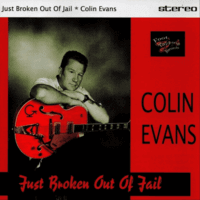

Colin Evans - Just Broken out of Jail (Album, 2005)
01 - State Of Alabama (3:04)
02 - Rockin' In My Coffin (3:01)
03 - Hypnotic (3:54)
04 - Ballroom Blitz (3:42)
05 - Baby I'm Over You (3:09)
06 - Desperate Man (2:26)
07 - Baby I'm Falling For You (2:13)
08 - Sad And Blue Without You (3:23)
09 - Mender Of A Broken Heart (3:18)
10 - Straightjacket (3:07)
© Foot Tapping Records :: [FT043]
Notes
reference information: Discogs®
Review
022/366 (Project 366)
Very poetic, dreamy and enchanting authentic Rockabilly Rock'n'Roll. Lovely sound with an interesting lyrics, sometimes rough and sometimes plain. With many of things that so amazing with artists like Darrel Higham or even Bob Butfoy. Charm, energy, sentiments, artistry, poise and cool temper. Colin Evans is a disovery for me!
The album "Just Broken out of Jail" featured just ten tracks - but all of them (practically) are so catchy and tuned! At a different pace, in a different mood, with different lyrics from track to track. Some of them correspond to each other. Almost all of them are surely hits. Recordings sounds good and balanced! I like it. And I do it so much that I want to take an hour for careful listening before full review will be done. As with the thrid song: "that girl is so hypnotic" - this album no less!